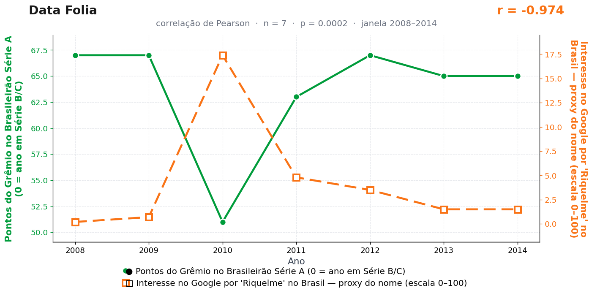

Post de 27/07/2026
A teoria
O futebol brasileiro usa Porto Alegre como uma referência de ordem. Quando o Grêmio pontua com regularidade, o país sente que existe método suficiente na Série A e diminui a necessidade de procurar calma vinda de fora.
Riquelme ocupa justamente esse lugar: o nome que representa pausa, passe e domínio emocional. Ele aparece quando a tabela pede uma explicação mais lenta, mais cerebral e mais argentina para o que está acontecendo em campo.
A curva une desempenho e memória. O Grêmio fornece ou retira estabilidade; Riquelme entra como referência que todo mundo busca sempre que o futebol precisa lembrar como se pensa antes de tocar na bola.
Procurado, Riquelme não comentou — atitude coerente com um jogador que construiu a carreira sabendo o valor exato de uma pausa. O Grêmio também não comentou, mas por outros motivos.
A teoria é ficção; a correlação é real: r = −0,97 (n = 7, p < 0,001).
Os dados por trás

- Pontos do Grêmio no Brasileirão Série A (0 = ano em Série B/C) — 7 pontos anuais, período 2008–2014. Fonte: CBF / Wikipedia — Campeonato Brasileiro Série A.
- Interesse no Google por 'Riquelme' no Brasil — proxy do nome (escala 0–100) — 7 pontos anuais, período 2008–2014. Fonte: Google Trends (pytrends).
Como as correlações deste site são encontradas — e por que você não deve confiar nelas — está explicado na nossa metodologia.
Por que isso acontece?
Um único ano sustenta esta correlação: 2010, quando o interesse por "Riquelme" no Google saltou para 17,4 (contra valores entre 0,2 e 4,8 em todos os outros anos) e o Grêmio fez justamente sua pior pontuação da janela (51). Em uma amostra de 7 pontos, um outlier desse tamanho domina completamente o cálculo do Pearson: ele vira o ponto de apoio da reta, e o resto é figuração. Sem 2010, o r = −0,97 se desfaz.
O pico de 2010 tem explicação própria — Riquelme fazia notícia naquele ano — e nada tem a ver com nomes de bebês gaúchos: o Google Trends mede buscas de todo tipo, com escala renormalizada de 0 a 100, e um jogador em evidência distorce qualquer leitura "demográfica" da série.
A lição estatística: sempre olhe o gráfico de dispersão antes de acreditar em um r. Correlações inteiras podem morar dentro de um único ponto — e esta mora.
Post de 27/07/2026 · publicado também no Instagram @datafolia.